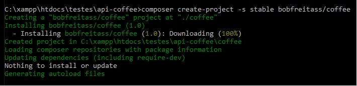
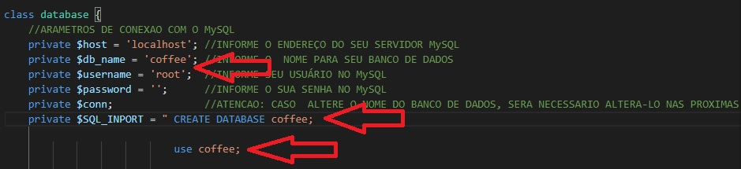
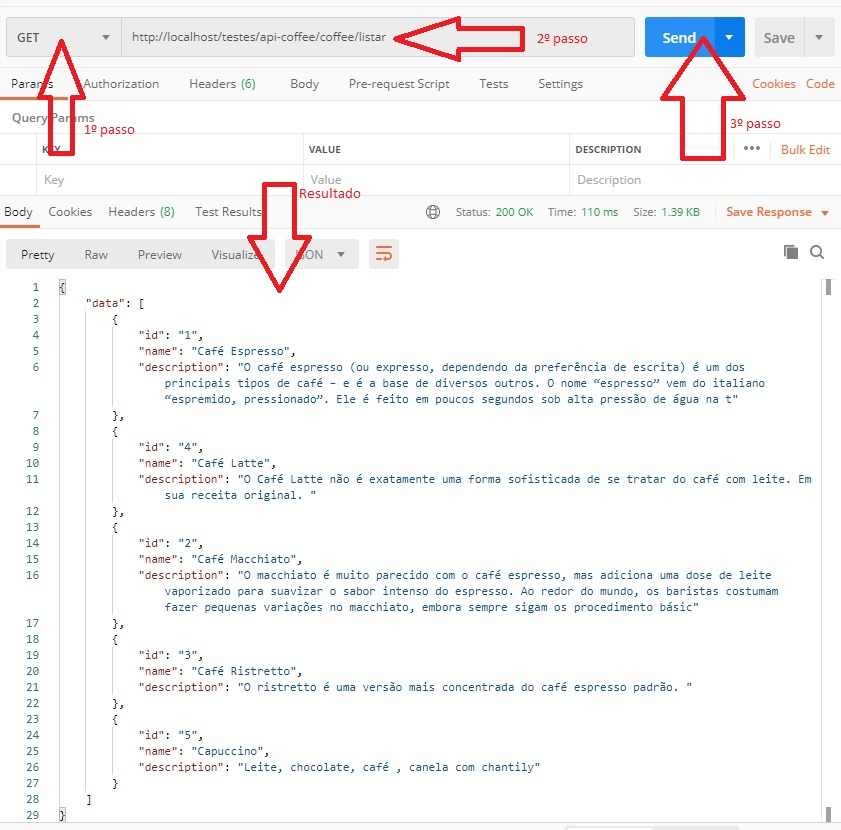
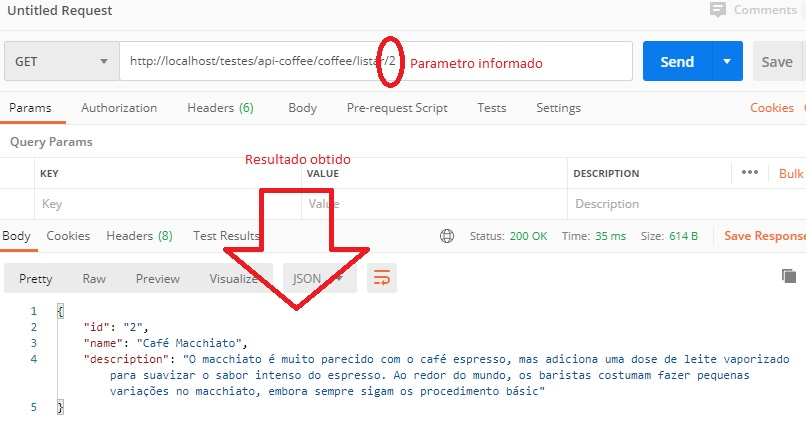
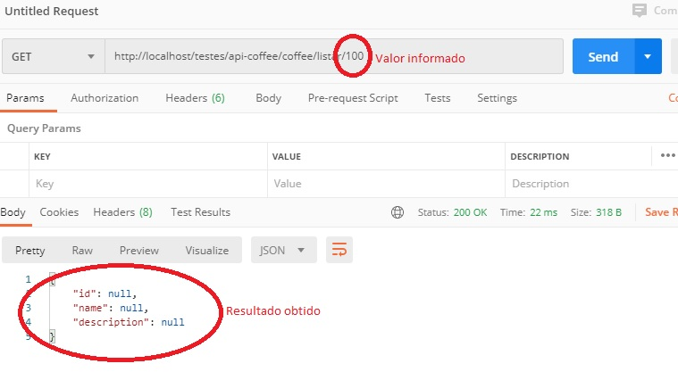
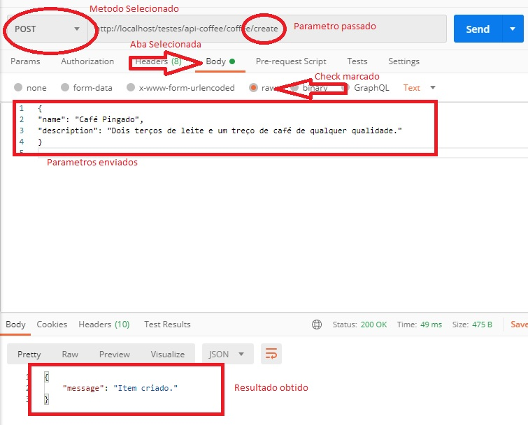
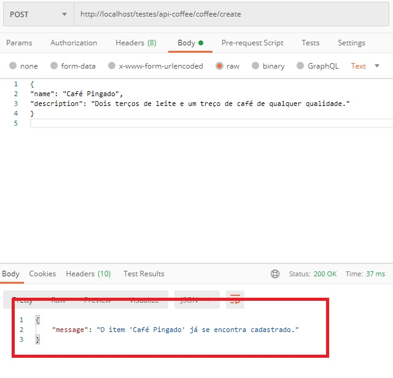
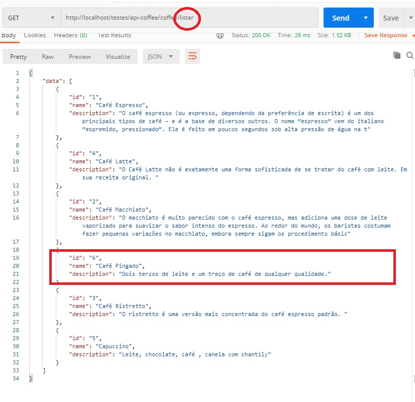

API – Coffee v1.0: Desenvolvida para
cadastra, listar e apagar variedades de café.
REQUISITOS PARA UTILIZAÇÃO:
- PHP (recomendado versao7.2 ou superior)
- MySQL (recomendado versão 5.7 ou superior)
- POSTMAN (utilizado para estar a API). Clique Aqui para baixar.
- COMPOSER (Recomendado para instalar a API). Clique Aqui para baixar.
IMPORTANTE:
Para demonstrar a API, iremos utilizar o servidor web APACHE.
Para SERVIDORES ambientado em Windows, é necessário que o PHP esteja declarado na variável de ambiente PATH, pois iremos utilizar comandos PHP em Prompt de Comando. Veja como fazer!
INSTALANDO A API:
- Crie uma pasta para a API em seu servidor.
- Abra o Promp de Comando e vá até o diretório criado.
- Feito isso, informe o comando: composer create-project -s stable bobfreitass/coffee
e aguarde alguns segundos.
O resultado deverá ser similar a imagem abaixo:

- Agora basta configurar a conexão com o Banco de Dados MySQL.
Para isso, a partir do diretório escolhido, entre em "coffee/config/" e
edite o arquivo: database.php conforme sinalizado na imagem abaixo.

**Lembrando que ao mudar o nome do Banco de Dados, deve-se faze-lo em 3 pontos especificos.
Agora está tudo pronto para testar, pois quando executar-mos a API pela primeira vez, o Banco de Dados será criado e alimentado com os primeiros dados para leitua.
TESTANDO A API:
Parâmetros a serem testados:
- Cadastro de um café (a bebida possui id, nome e descrição como atributos).
- Listagem de todos os cafés cadastrados
- Pesquisa de um café por id
- Não deve ser possível cadastrar o mesmo café duas vezes.
- Cada endpoint deve utilizar o verbo HTTP correto para a ação correspondente.
- As respostas da API devem ser um JSON válido.
VAMOS AOS TESTES:
- Abra o programa POSTMAN.
- Selecione o metodo GET e insira o endereço da API na barra de endereços informando o parametro /listar. Por fim, clique no botão "Send".
Esta primeira requisição servirá para que a api
crie e alimente o banco de dados.
O resultado semelhante ao da imagem abaixo, nos diz que esta tudo certo com as configurações do arquivo config.php .
Caso contrário, retorne ao tópico 4 da instalação e revise as configurações.

- Ainda utilizando o método GET, vamos informar mais um parâmetro em nossa barra de endereços. Mantendo como está no teste anteriror, acrescente uma barra "/" e informe o número de "id" para realizar uma pesquisa.
Segue abaixo a imagem com o resultado para o "id
2".

Se informarmos um "id" não cadastrado; note que os valores retornam nulos, conforme demonstrado na imagem abaixo.

- Agora, vamos selecionar o método POST para cadastrar um café.
Passe os parâmetro /create logo após o endereço da API, ficando assim: [SEU_SERVIDOR]/[DIRETORIO_INSTALACAO]/coffee/create
Selecione a aba "Body", em seguida marque o check "raw" e informe os parâmetros no campo logo abaixo.
{
"name": "Café Pingado",
"description": "Dois terços de leite e um treço de café de qualquer qualidade."
}
Segue imagem abaixo com o resultado esperado.

Caso tentemos cadastrar o mesmo café novamente não conseguiremos, como demonstrado na imagem a seguir.

- Agora para finalizar, realize uma consulta na lista de cafés para verificar como ficou.
Lembrando a instrução do parâmetro no segundo tópico deste item: /listar
Segue imagem do resultado

Finalizo por aqui este documento, deixando um contato a disposição: robertfreitass@gmail.com.br
BIBLIOGRAFIA:
Conteúdo inserido em nossa lista inicial retirado do site: https://www.loucodocafe.com.br/tipos-de-cafe/